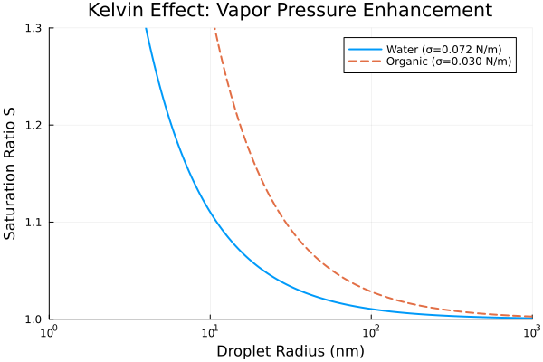
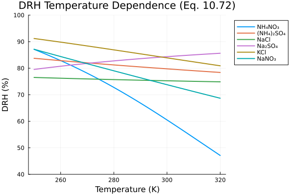
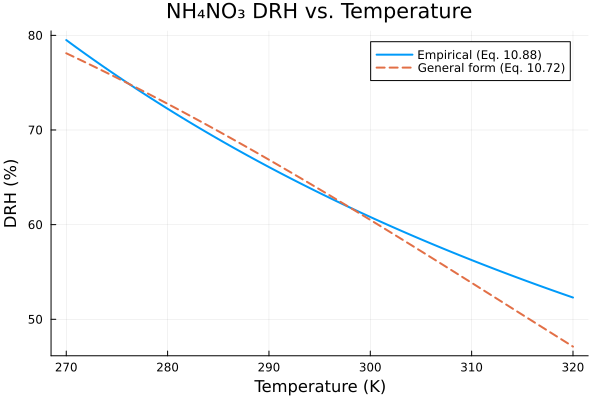
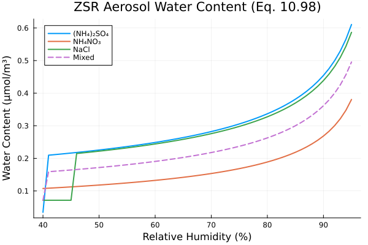
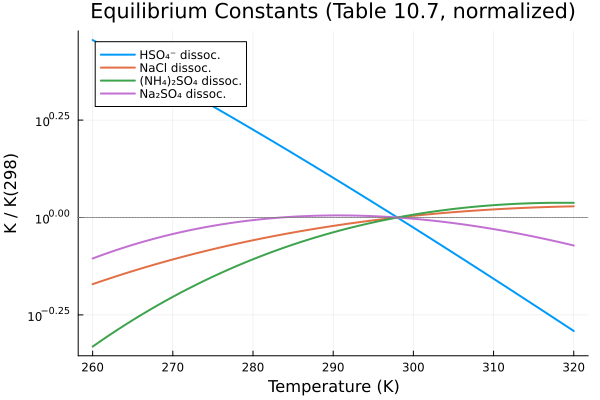
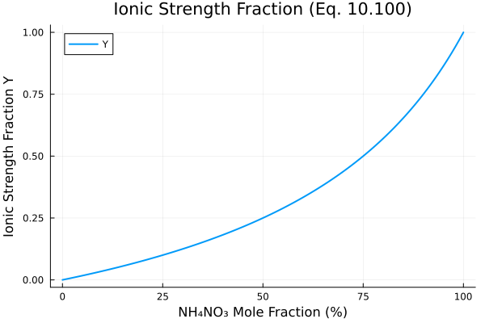

Aerosol Thermodynamics (Seinfeld & Pandis Ch. 10)
Overview
This module implements key aerosol thermodynamics equations from Chapter 10 of Seinfeld & Pandis (2006). These equations govern the phase behavior, hygroscopic growth, and gas-particle partitioning of atmospheric aerosols, which are essential processes for air quality modeling and climate science.
The module provides four ModelingToolkit components:
- KelvinEffect: Vapor pressure enhancement over curved droplet surfaces (Eq. 10.86)
- DRHTemperature: Temperature-dependent deliquescence relative humidity (Eq. 10.72)
- ZSRWaterContent: Aerosol liquid water content via the Zdanovskii-Stokes-Robinson mixing rule (Eq. 10.98)
- NH4NO3Equilibrium: Ammonium nitrate gas-aerosol partitioning (Eqs. 10.88, 10.91)
Additionally, standalone functions are provided for all equilibrium constant calculations from Table 10.7.
Reference: Seinfeld, J.H. and Pandis, S.N. (2006) "Atmospheric Chemistry and Physics: From Air Pollution to Climate Change", 2nd Edition, John Wiley & Sons, Chapter 10.
Aerosol.SeinfeldPandisCh10.KelvinEffect — Function
KelvinEffect(; name=:KelvinEffect)A component that calculates the Kelvin effect on vapor pressure over curved droplet surfaces.
Implements Equation 10.86 from Seinfeld & Pandis (2006):
\[p_A = p°_A \exp\left(\frac{2\sigma M}{RT \rho_l R_p}\right)\]
where:
p_Ais the vapor pressure over the dropletp°_Ais the saturation vapor pressure over a flat surfaceσis the surface tensionMis the molar massRis the gas constantTis temperatureρ_lis the liquid densityR_pis the droplet radius
Variables
S: Saturation ratio (pA / p°A) (dimensionless)ln_S: Natural log of saturation ratio (dimensionless)
Parameters
T: Temperature (K)R_p: Particle radius (m)σ: Surface tension (N/m)M_mol: Molar mass (kg/mol)ρ_l: Liquid density (kg/m³)
Example
using ModelingToolkit, Aerosol
@mtkbuild sys = KelvinEffect()Aerosol.SeinfeldPandisCh10.DRHTemperature — Function
DRHTemperature(; name=:DRHTemperature, salt=:NH4NO3)A component that calculates the temperature-dependent deliquescence relative humidity.
Implements Equation 10.72 from Seinfeld & Pandis (2006):
\[DRH(T) = DRH(298) \exp\left\{\frac{\Delta H_s}{R}\left[A\left(\frac{1}{T} - \frac{1}{298}\right) - B\ln\frac{T}{298} - C(T-298)\right]\right\}\]
where A, B, C are the solubility polynomial coefficients from Table 10.2.
Parameters
T: Temperature (K)DRH_298K: DRH at 298 K (dimensionless, 0-1)ΔH_s: Enthalpy of solution (J/mol)A_sol: Solubility coefficient A (dimensionless)B_sol: Solubility coefficient B (K⁻¹)C_sol: Solubility coefficient C (K⁻²)
Variables
DRH: Deliquescence relative humidity at temperature T (dimensionless, 0-1)
Example
using ModelingToolkit, Aerosol
@mtkbuild sys = DRHTemperature(salt = :NH4NO3)Aerosol.SeinfeldPandisCh10.ZSRWaterContent — Function
ZSRWaterContent(; name=:ZSRWaterContent, n_species=3)A component that calculates aerosol liquid water content using the ZSR mixing rule.
Implements Equation 10.98 from Seinfeld & Pandis (2006):
\[W = \sum_i \frac{C_i}{m_{i,0}(a_w)}\]
where:
Wis the total aerosol liquid water content (kg water per m³ air)Cᵢis the concentration of species i (mol/m³ air)mᵢ,₀(aᵤ)is the molality of species i in a binary solution at water activity aᵤ
The water activity equals the relative humidity for equilibrium aerosols (Eq. 10.63).
Parameters
RH: Relative humidity as a fraction (0-1)C[1:n_species]: Concentrations of each salt species (mol/m³)m0[1:n_species]: Molalities of each species at saturation in binary solution (mol/kg)
Variables
W: Total aerosol liquid water content (kg/m³)α_w: Water activity (dimensionless)
Example
using ModelingToolkit, Aerosol
@mtkbuild sys = ZSRWaterContent(n_species = 2)Aerosol.SeinfeldPandisCh10.NH4NO3Equilibrium — Function
NH4NO3Equilibrium(; name=:NH4NO3Equilibrium)A component that calculates NH4NO3 gas-aerosol equilibrium.
Implements the equilibrium reactions and constants from Section 10.4.3 of Seinfeld & Pandis (2006).
Solid NH4NO3 equilibrium (below DRH)
Eq. 10.87: NH3(g) + HNO3(g) ⇌ NH4NO3(s)
Eq. 10.91 - Dissociation constant (ppb² units):
\[\ln K_p = 84.6 - \frac{24220}{T} - 6.1 \ln\frac{T}{298}\]
Aqueous NH4NO3 equilibrium (above DRH)
Eq. 10.92: NH3(g) + HNO3(g) ⇌ NH4+ + NO3-
Eq. 10.97 - Equilibrium constant:
\[K_{AN} = 4 \times 10^{17} \exp\left\{64.7\left(\frac{298}{T} - 1\right) + 11.51\left[1 + \ln\frac{298}{T} - \frac{298}{T}\right]\right\}\]
(units: mol² kg⁻² atm⁻²)
Ionic strength fraction (Eq. 10.100)
\[Y = \frac{[NH_4NO_3]}{[NH_4NO_3] + 3[(NH_4)_2SO_4]}\]
Parameters
T: Temperature (K)RH: Relative humidity (0-1)C_NH42SO4: (NH4)2SO4 concentration for ionic strength calculation (mol/m³)
Variables
ln_Kp: Log of solid dissociation constant (dimensionless for ppb² units)Kp: Solid dissociation constant (ppb²)K_AN: Aqueous equilibrium constant (mol² kg⁻² atm⁻²)DRH: Deliquescence RH of NH4NO3 (dimensionless)is_aqueous: 1 if RH > DRH (aqueous phase), 0 otherwise (dimensionless)Y: Ionic strength fraction (dimensionless)
Example
# Temperature coefficients with units for Eq. 10.91 and 10.88using ModelingToolkit, Aerosol
@mtkbuild sys = NH4NO3Equilibrium()Implementation
KelvinEffect Component
The Kelvin effect describes the enhancement of vapor pressure over a curved liquid surface relative to a flat surface (Eq. 10.86):
\[p_A = p°_A \exp\left(\frac{2\sigma M}{RT \rho_l R_p}\right)\]
Variables
using DataFrames, ModelingToolkit, Symbolics, DynamicQuantities
using Aerosol, Aerosol.SeinfeldPandisCh10
sys = KelvinEffect()
vars = unknowns(sys)
DataFrame(
:Name => [string(Symbolics.tosymbol(v, escape = false)) for v in vars],
:Units => [string(ModelingToolkit.get_unit(v)) for v in vars],
:Description => [ModelingToolkit.getdescription(v) for v in vars]
)| Row | Name | Units | Description |
|---|---|---|---|
| String | String | String | |
| 1 | ln_S | 1.0 | Natural log of saturation ratio (dimensionless) |
| 2 | S | 1.0 | Saturation ratio p_A/p°_A (dimensionless) |
Parameters
params = parameters(sys)
DataFrame(
:Name => [string(Symbolics.tosymbol(p, escape = false)) for p in params],
:Units => [string(ModelingToolkit.get_unit(p)) for p in params],
:Description => [ModelingToolkit.getdescription(p) for p in params]
)| Row | Name | Units | Description |
|---|---|---|---|
| String | String | String | |
| 1 | T | 1.0 K | Temperature |
| 2 | ρ_l | 1.0 m⁻³ kg | Liquid density |
| 3 | R_p | 1.0 m | Particle radius |
| 4 | R_gas | 1.0 m² kg s⁻² K⁻¹ mol⁻¹ | Universal gas constant |
| 5 | M_mol | 1.0 kg mol⁻¹ | Molar mass |
| 6 | σ | 1.0 kg s⁻² | Surface tension |
Equations
equations(sys)\[ \begin{align} \mathtt{ln\_S}\left( t \right) &= \frac{2 \mathtt{M\_mol} \sigma}{\mathtt{R\_gas} \mathtt{R\_p} T \mathtt{\rho\_l}} \\ S\left( t \right) &= e^{\mathtt{ln\_S}\left( t \right)} \end{align} \]
DRHTemperature Component
Calculates the temperature-dependent deliquescence relative humidity using Eq. 10.72:
\[DRH(T) = DRH(298) \exp\left\{\frac{\Delta H_s}{R}\left[A\left(\frac{1}{T} - \frac{1}{298}\right) - B\ln\frac{T}{298} - C(T-298)\right]\right\}\]
where A, B, C are the solubility polynomial coefficients from Table 10.2.
Variables and Parameters
sys_drh = DRHTemperature(salt = :NH4NO3)
params_drh = parameters(sys_drh)
DataFrame(
:Name => [string(Symbolics.tosymbol(p, escape = false)) for p in params_drh],
:Units => [string(ModelingToolkit.get_unit(p)) for p in params_drh],
:Description => [ModelingToolkit.getdescription(p) for p in params_drh]
)| Row | Name | Units | Description |
|---|---|---|---|
| String | String | String | |
| 1 | T_ref | 1.0 K | Reference temperature |
| 2 | R_gas | 1.0 m² kg s⁻² K⁻¹ mol⁻¹ | Universal gas constant |
| 3 | B_sol | 1.0 K⁻¹ | Solubility coefficient B |
| 4 | A_sol | 1.0 | Solubility coefficient A (dimensionless) |
| 5 | C_sol | 1.0 K⁻² | Solubility coefficient C |
| 6 | DRH_298K | 1.0 | DRH at 298 K (dimensionless) |
| 7 | ΔH_s | 1.0 m² kg s⁻² mol⁻¹ | Enthalpy of solution |
| 8 | T | 1.0 K | Temperature |
Equations
equations(sys_drh)\[ \begin{align} \mathtt{DRH}\left( t \right) &= \mathtt{DRH\_298K} e^{\frac{\left( \mathtt{A\_sol} \left( \frac{1}{T} + \frac{-1}{\mathtt{T\_ref}} \right) - \mathtt{B\_sol} \log\left( \frac{T}{\mathtt{T\_ref}} \right) - \mathtt{C\_sol} \left( T - \mathtt{T\_ref} \right) \right) \mathtt{{\Delta}H\_s}}{\mathtt{R\_gas}}} \end{align} \]
ZSRWaterContent Component
Calculates aerosol liquid water content using the ZSR mixing rule (Eq. 10.98):
\[W = \sum_i \frac{C_i}{m_{i,0}(a_w)}\]
where $C_i$ is the concentration of species $i$ and $m_{i,0}(a_w)$ is the molality in binary solution at water activity $a_w = RH$ (Eq. 10.63).
Variables and Parameters
sys_zsr = ZSRWaterContent(n_species = 2)
vars_zsr = unknowns(sys_zsr)
DataFrame(
:Name => [string(Symbolics.tosymbol(v, escape = false)) for v in vars_zsr],
:Units => [string(ModelingToolkit.get_unit(v)) for v in vars_zsr],
:Description => [ModelingToolkit.getdescription(v) for v in vars_zsr]
)| Row | Name | Units | Description |
|---|---|---|---|
| String | String | String | |
| 1 | α_w | 1.0 | Water activity (dimensionless) |
| 2 | W | 1.0 m⁻³ kg | Aerosol liquid water content |
NH4NO3Equilibrium Component
Implements NH₄NO₃ gas-aerosol equilibrium including:
- Solid dissociation constant $K_p$ (Eq. 10.91): $\ln K_p = 84.6 - 24220/T - 6.1 \ln(T/298)$
- Empirical DRH (Eq. 10.88): $\ln(DRH\%) = 723.7/T + 1.6954$
- Phase determination based on RH vs DRH
Equations
sys_nh4 = NH4NO3Equilibrium()
equations(sys_nh4)\[ \begin{align} \mathtt{ln\_Kp}\left( t \right) &= \mathtt{c1\_Kp} + \frac{ - \mathtt{c2\_Kp}}{T} - \mathtt{c3\_Kp} \log\left( \frac{T}{\mathtt{T\_ref}} \right) \\ \mathtt{DRH\_out}\left( t \right) &= 0.01 e^{\mathtt{c2\_DRH} + \frac{\mathtt{c1\_DRH}}{T}} \\ \mathtt{is\_aqueous}\left( t \right) &= ifelse\left( \mathtt{RH} > \mathtt{DRH\_out}\left( t \right), 1, 0 \right) \end{align} \]
Equilibrium Constants (Table 10.7)
Temperature-dependent equilibrium constants for 13 reactions follow the general form:
\[K(T) = K(298) \exp\left\{a\left(\frac{298}{T} - 1\right) + b\left[1 + \ln\frac{298}{T} - \frac{298}{T}\right]\right\}\]
Aerosol.SeinfeldPandisCh10.get_equilibrium_constant — Function
get_equilibrium_constant(reaction::Symbol, T::Real)Get the equilibrium constant for a reaction at temperature T using Table 10.7 data.
Arguments
reaction: Symbol identifying the reaction (e.g., :NH4NO3solid, :HSO4dissoc)T: Temperature (K)
Returns
Equilibrium constant at temperature T
Available reactions
- :NaCl_HNO3 - NaCl(s) + HNO3(g) ⇌ NaNO3(s) + HCl(g)
- :HSO4_dissoc - HSO4⁻ ⇌ H⁺ + SO4²⁻
- :NH3HNO3aq - NH3(g) + HNO3(g) ⇌ NH4⁺ + NO3⁻
- :HCl_dissoc - HCl(g) ⇌ H⁺ + Cl⁻
- :NH3HClaq - NH3(g) + HCl(g) ⇌ NH4⁺ + Cl⁻
- :Na2SO4_dissoc - Na2SO4(s) ⇌ 2Na⁺ + SO4²⁻
- :NH42SO4_dissoc - (NH4)2SO4(s) ⇌ 2NH4⁺ + SO4²⁻
- :HNO3_dissoc - HNO3(g) ⇌ H⁺ + NO3⁻
- :NH4Cl_dissoc - NH4Cl(s) ⇌ NH3(g) + HCl(g)
- :NH4NO3_solid - NH3(g) + HNO3(g) ⇌ NH4NO3(s)
- :NaCl_dissoc - NaCl(s) ⇌ Na⁺ + Cl⁻
- :NaHSO4_dissoc - NaHSO4(s) ⇌ Na⁺ + HSO4⁻
- :NaNO3_dissoc - NaNO3(s) ⇌ Na⁺ + NO3⁻
Analysis
Kelvin Effect: Saturation Ratio vs. Droplet Radius (cf. Figure 10.12)
The Kelvin effect becomes significant for particles smaller than ~100 nm. This figure shows the saturation ratio as a function of droplet radius for water at 298 K.
using Plots
# Saturation ratio vs droplet radius for water (Fig. 10.12)
R_p_range = 10 .^ range(log10(2e-9), log10(1e-6), length = 200)
S_water = [kelvin_saturation_ratio(298.0, R_p, 0.072, 0.018, 1000.0) for R_p in R_p_range]
plot(R_p_range * 1e9, S_water,
xlabel = "Droplet Radius (nm)", ylabel = "Saturation Ratio S",
label = "Water (σ=0.072 N/m)",
xscale = :log10, legend = :topright,
title = "Kelvin Effect: Vapor Pressure Enhancement",
linewidth = 2, xlims = (1, 1000), ylims = (1.0, 1.3))
# Add other compounds from Table 10.6 for comparison
# Dioctyl phthalate (DOP)-like organic: lower surface tension
S_organic = [kelvin_saturation_ratio(298.0, R_p, 0.030, 0.104, 900.0) for R_p in R_p_range]
plot!(R_p_range * 1e9, S_organic, label = "Organic (σ=0.030 N/m)",
linewidth = 2, linestyle = :dash)
# Add reference line at S=1
hline!([1.0], label = "", color = :gray, linestyle = :dot)
savefig("kelvin_effect.svg");
DRH Temperature Dependence (cf. Figure 10.6)
The deliquescence relative humidity varies with temperature. Salts with positive enthalpy of solution ($\Delta H_s > 0$) show decreasing DRH with increasing temperature, while those with negative $\Delta H_s$ show the opposite trend.
T_range = 250.0:1.0:320.0
salts = [:NH4NO3, :NH42SO4, :NaCl, :Na2SO4, :KCl, :NaNO3]
salt_labels = ["NH₄NO₃", "(NH₄)₂SO₄", "NaCl", "Na₂SO₄", "KCl", "NaNO₃"]
p_drh = plot(xlabel = "Temperature (K)", ylabel = "DRH (%)",
title = "DRH Temperature Dependence (Eq. 10.72)",
legend = :outertopright, ylims = (40, 100))
for (salt, label) in zip(salts, salt_labels)
drh_vals = [drh_temperature(T, salt) * 100 for T in T_range]
plot!(p_drh, T_range, drh_vals, label = label, linewidth = 2)
end
savefig("drh_temperature.svg");
NH₄NO₃ Dissociation Constant vs. Temperature (cf. Figure 10.19)
The dissociation constant $K_p$ of solid NH₄NO₃ increases strongly with temperature, indicating that higher temperatures favor evaporation of NH₄NO₃ to NH₃(g) + HNO₃(g).
T_range_kp = 270.0:0.5:320.0
Kp_vals = [nh4no3_Kp(T) for T in T_range_kp]
plot(T_range_kp, Kp_vals,
xlabel = "Temperature (K)", ylabel = "Kp (ppb²)",
title = "NH₄NO₃ Dissociation Constant (Eq. 10.91)",
label = "Kp", linewidth = 2, yscale = :log10,
legend = :topleft)
savefig("nh4no3_kp.svg");
NH₄NO₃ Deliquescence RH vs. Temperature (cf. Figure 10.20)
The DRH of NH₄NO₃ decreases with increasing temperature, which determines the phase transition boundary between solid and aqueous NH₄NO₃.
T_range_drh = 270.0:0.5:320.0
drh_nh4no3_emp = [nh4no3_drh(T) * 100 for T in T_range_drh]
drh_nh4no3_eq72 = [drh_temperature(T, :NH4NO3) * 100 for T in T_range_drh]
plot(T_range_drh, drh_nh4no3_emp,
xlabel = "Temperature (K)", ylabel = "DRH (%)",
title = "NH₄NO₃ DRH vs. Temperature",
label = "Empirical (Eq. 10.88)", linewidth = 2)
plot!(T_range_drh, drh_nh4no3_eq72,
label = "General form (Eq. 10.72)", linewidth = 2, linestyle = :dash)
savefig("nh4no3_drh.svg");
ZSR Water Content vs. Relative Humidity
The ZSR mixing rule predicts aerosol liquid water content as a function of relative humidity for multicomponent aerosols.
RH_range = 0.4:0.01:0.95
# Single-component water uptake
W_nh42so4 = [zsr_water_content(RH, Dict(:NH42SO4 => 1e-6)) for RH in RH_range]
W_nh4no3 = [zsr_water_content(RH, Dict(:NH4NO3 => 1e-6)) for RH in RH_range]
W_nacl = [zsr_water_content(RH, Dict(:NaCl => 1e-6)) for RH in RH_range]
# Mixed aerosol
W_mixed = [zsr_water_content(RH, Dict(:NH42SO4 => 0.5e-6, :NH4NO3 => 0.5e-6))
for RH in RH_range]
plot(RH_range * 100, W_nh42so4 * 1e6,
xlabel = "Relative Humidity (%)", ylabel = "Water Content (μmol/m³)",
title = "ZSR Aerosol Water Content (Eq. 10.98)",
label = "(NH₄)₂SO₄", linewidth = 2)
plot!(RH_range * 100, W_nh4no3 * 1e6, label = "NH₄NO₃", linewidth = 2)
plot!(RH_range * 100, W_nacl * 1e6, label = "NaCl", linewidth = 2)
plot!(RH_range * 100, W_mixed * 1e6, label = "Mixed", linewidth = 2, linestyle = :dash)
savefig("zsr_water.svg");
Temperature Dependence of Equilibrium Constants (Table 10.7)
Selected equilibrium constants from Table 10.7 showing their temperature dependence.
T_range_eq = 260.0:1.0:320.0
reactions = [:HSO4_dissoc, :NaCl_dissoc, :NH42SO4_dissoc, :Na2SO4_dissoc]
labels = ["HSO₄⁻ dissoc.", "NaCl dissoc.", "(NH₄)₂SO₄ dissoc.", "Na₂SO₄ dissoc."]
p_eq = plot(xlabel = "Temperature (K)", ylabel = "K / K(298)",
title = "Equilibrium Constants (Table 10.7, normalized)",
legend = :topleft, yscale = :log10)
for (rxn, label) in zip(reactions, labels)
K_ref = get_equilibrium_constant(rxn, 298.0)
K_vals = [get_equilibrium_constant(rxn, T) / K_ref for T in T_range_eq]
plot!(p_eq, T_range_eq, K_vals, label = label, linewidth = 2)
end
hline!([1.0], label = "", color = :gray, linestyle = :dot)
savefig("equilibrium_constants.svg");
Ionic Strength Fraction (Eq. 10.100)
The ionic strength fraction $Y$ determines the activity coefficient correction for NH₄NO₃ in the presence of (NH₄)₂SO₄:
\[Y = \frac{[\text{NH}_4\text{NO}_3]}{[\text{NH}_4\text{NO}_3] + 3[(\text{NH}_4)_2\text{SO}_4]}\]
ratios = 0.0:0.01:1.0 # NH4NO3 fraction of total
Y_vals = [ionic_strength_fraction(r, 1-r) for r in ratios]
plot(ratios * 100, Y_vals,
xlabel = "NH₄NO₃ Mole Fraction (%)", ylabel = "Ionic Strength Fraction Y",
title = "Ionic Strength Fraction (Eq. 10.100)",
label = "Y", linewidth = 2, legend = :topleft)
savefig("ionic_strength.svg");
Functional API Reference
Aerosol.SeinfeldPandisCh10.kelvin_saturation_ratio — Function
kelvin_saturation_ratio(T, R_p, σ, M_mol, ρ_l)Calculate the Kelvin saturation ratio for a droplet.
Implements Equation 10.86 from Seinfeld & Pandis (2006).
Arguments
T: Temperature (K)R_p: Particle radius (m)σ: Surface tension (N/m)M_mol: Molar mass (kg/mol)ρ_l: Liquid density (kg/m³)
Returns
Saturation ratio S = pA/p°A (dimensionless)
Example
For a 50 nm water droplet at 298 K:
S = kelvin_saturation_ratio(298.0, 50e-9, 0.072, 0.018, 1000.0)
# S ≈ 1.024 (2.4% vapor pressure enhancement)Aerosol.SeinfeldPandisCh10.drh_temperature — Function
drh_temperature(T, salt::Symbol)Calculate the DRH of a salt at temperature T using the full form of Eq. 10.72.
\[DRH(T) = DRH(298) \exp\left\{\frac{\Delta H_s}{R}\left[A\left(\frac{1}{T} - \frac{1}{298}\right) - B\ln\frac{T}{298} - C(T-298)\right]\right\}\]
where A, B, C are the solubility polynomial coefficients from Table 10.2.
Arguments
T: Temperature (K)salt: Salt symbol (:NH4NO3, :NH42SO4, :NaCl, etc.)
Returns
DRH as a decimal fraction (0-1)
Example
drh = drh_temperature(280.0, :NH4NO3) # Returns DRH of NH4NO3 at 280 KAerosol.SeinfeldPandisCh10.nh4no3_drh — Function
nh4no3_drh(T)Calculate the DRH of NH4NO3 using the empirical correlation (Eq. 10.88).
\[\ln(DRH) = \frac{723.7}{T} + 1.6954\]
Arguments
T: Temperature (K)
Returns
DRH as a decimal fraction (0-1)
Aerosol.SeinfeldPandisCh10.zsr_water_content — Function
zsr_water_content(RH, concentrations::Dict{Symbol,Float64})Calculate aerosol liquid water content using the ZSR mixing rule (Eq. 10.98).
Arguments
RH: Relative humidity as a fraction (0-1)concentrations: Dictionary mapping salt symbols to concentrations (mol/m³)
Returns
Aerosol liquid water content W (kg/m³)
Supported salts
- :NH42SO4 - Ammonium sulfate
- :NH4NO3 - Ammonium nitrate
- :NaCl - Sodium chloride
Example
W = zsr_water_content(0.8, Dict(:NH42SO4 => 1e-6, :NH4NO3 => 2e-6)) # Eq. 10.63Aerosol.SeinfeldPandisCh10.nh4no3_Kp — Function
nh4no3_Kp(T)Calculate the solid NH4NO3 dissociation constant at temperature T.
Implements Equation 10.91 from Seinfeld & Pandis (2006):
\[\ln K_p = 84.6 - \frac{24220}{T} - 6.1 \ln\frac{T}{298}\]
Arguments
T: Temperature (K)
Returns
Kp in ppb² units
Aerosol.SeinfeldPandisCh10.nh4no3_K_AN — Function
nh4no3_K_AN(T)Calculate the aqueous NH4NO3 equilibrium constant at temperature T.
Implements Equation 10.97 from Seinfeld & Pandis (2006).
Arguments
T: Temperature (K)
Returns
K_AN in mol² kg⁻² atm⁻² units
Aerosol.SeinfeldPandisCh10.ionic_strength_fraction — Function
ionic_strength_fraction(C_NH4NO3, C_NH42SO4)Calculate the ionic strength fraction Y (Eq. 10.100).
Arguments
C_NH4NO3: NH4NO3 concentration (any units, same as C_NH42SO4)C_NH42SO4: (NH4)2SO4 concentration (any units, same as C_NH4NO3)
Returns
Ionic strength fraction Y (dimensionless, 0-1)
Aerosol.SeinfeldPandisCh10.equilibrium_constant_temperature — Function
equilibrium_constant_temperature(K_ref, T, T_ref, a, b)Calculate temperature-dependent equilibrium constant using the standard form.
\[K(T) = K(298) \exp\left\{a\left(\frac{298}{T} - 1\right) + b\left[1 + \ln\frac{298}{T} - \frac{298}{T}\right]\right\}\]
This form is used for equilibrium constants in Table 10.7 of Seinfeld & Pandis (2006).
Arguments
K_ref: Equilibrium constant at reference temperatureT: Temperature (K)T_ref: Reference temperature (K), typically 298a: First temperature coefficientb: Second temperature coefficient
Returns
Equilibrium constant at temperature T
Aerosol.SeinfeldPandisCh10.binary_molality_nh42so4 — Function
binary_molality_nh42so4(a_w)Calculate the molality of (NH4)2SO4 in binary aqueous solution at water activity a_w.
Based on polynomial fits to water activity data.
Aerosol.SeinfeldPandisCh10.binary_molality_nh4no3 — Function
binary_molality_nh4no3(a_w)Calculate the molality of NH4NO3 in binary aqueous solution at water activity a_w.
Aerosol.SeinfeldPandisCh10.binary_molality_nacl — Function
binary_molality_nacl(a_w)Calculate the molality of NaCl in binary aqueous solution at water activity a_w.
Module Reference
Aerosol.SeinfeldPandisCh10 — Module
Aerosol thermodynamics equations from Seinfeld & Pandis (2006) Chapter 10.
Reference: Seinfeld, J.H. and Pandis, S.N. (2006) "Atmospheric Chemistry and Physics: From Air Pollution to Climate Change", 2nd Edition, John Wiley & Sons, Chapter 10.